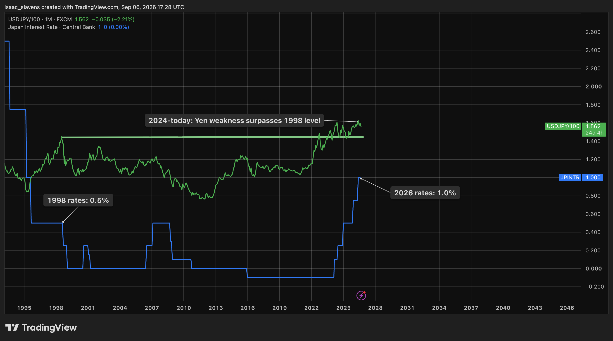
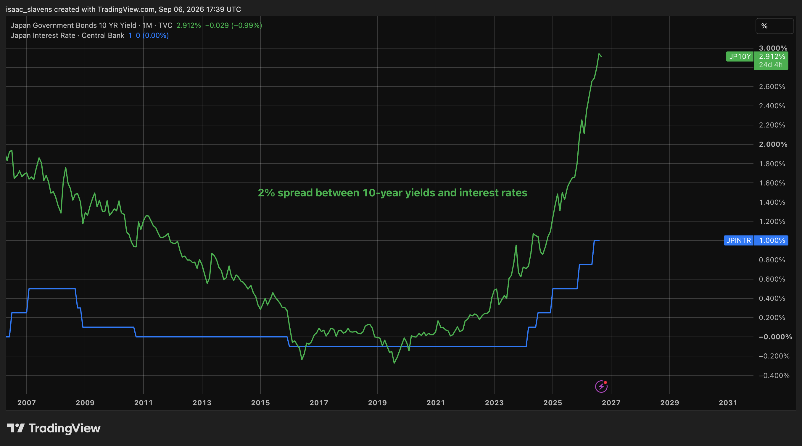
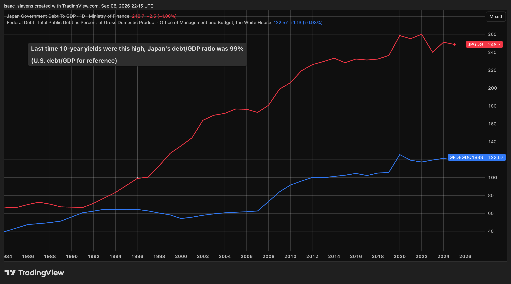
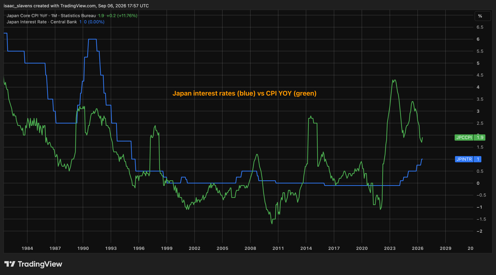

As I write this analysis in September 2026, there is broad economic strength and optimism throughout the world fueled by the nearly limitless potential of AI and robotics. The purpose of this article is to examine a potential source of economic stress. I believe it is always valuable, especially in times of extreme optimism and growth, to take a step back and consider which factors might make the music stop, and what their implications are. It is up to the reader to consider whether or not these risks to the current global economic environment are relevant.
In 1997, when the Thai currency collapsed, there was a crack in the system which led to a 20% S&P 500 correction. This weakened an already unstable yen, forcing Japan to sell many assets to remain stable. This was compounded by a Russian debt default, but Alan Greenspan intervened to avoid a full systemic reset. Since the summer of 2024, the Japanese yen surpassed its weakness relative to the dollar from 1998, and is pushing higher today despite BOJ interest rates being twice as high today as they were at that time. Scott Bessent's cooperation with the Bank of Japan to keep the exchange rate stable has bought the market some time, flattening the exchange rate at the level of this summer's rally.

The problem with Japan is that they will eventually have to tighten significantly past a 1% interest rate. The market is screaming at them to act sooner than later, demanding a 3% yield on their 10-year bonds. While currency interventions buy Japan time, they won't work forever, as they are in a uniquely dangerous situation with their debt spiral. With a debt/GDP ratio of nearly 250%, it was only a matter of time that yields would run out of control. The Japanese government now pays the highest interest rate on its debt since the early 2000s. In 2022, their interest expense represented 8.4% of government revenue -- at an interest rate of ~0.25% -- under one tenth of today's level. As their effective interest rate catches up to yields in the coming years, the situation becomes bleak. The last time yields were as high as 3%, Japan was financing a debt/GDP ratio under 100%.2


Japan has to put its own consumers first, which will likely mean tightening eventually. Regardless of what that implies for its fiscal situation, they can not afford to let the yen unwind, and are showing eagerness to get it back to comfortable levels. An interest rate at 1% has been sufficient to get inflation somewhat under control recently, but it still remains elevated relative to this century, which had zero-rates.

Should another round of tightening come eventually, there could be extreme implications as a result of the yen-carry trade. Those who borrow large sums in yen at rates historically below 1% have benefited from capturing a favourable spread into other stable markets whose treasuries and equities reliably offer a comfortable spread. If the interest rate differential narrows alongside a strengthening of the yen, a wave of forced selling could take place. The good news is that Scott Bessent will stop at nothing to prevent that from happening, and if it does, he won't let the consequences damage markets meaningfully.
Bessent has been active and ambitious in his engagement with Japan. His objective is to balance a yen recovery with market stability by facilitating the inevitable in a gradual manner, as opposed to the only other option: letting it all happen in one fell swoop as a result of delaying it. He is not only attempting to prevent the yen-carry trade from unwinding, but recognizes that the dollar will suffer even if the yen bleeds slowly, independent of a disaster. As Japan is forced to intervene to support the yen, much of those funds will come from selling U.S. Treasuries, which are already suffering from a historic absence of buyers. The last thing Bessent would like to see is another major seller. Japan is the largest holder of U.S. Treasuries in the world, with a stockpile valued at over one trillion dollars as of June 2026.3 Japan has no interest in collapsing the finances of their greatest ally, but if their currency falls out of control, they will have no choice but to become the largest seller of U.S. Treasuries in the world. This year's interventions, regardless of the extent of American involvement, have doubtlessly been a factor in the American debt repricing -- forcing the market to price in the chances of a selling cascade of historic proportions.
Secretary Bessent has been very clear that he wants Japan to tighten their policy. He insists that he has "been in close contact with our Japanese allies, and they are making serious efforts to address the substantial undervaluation of the yen. Through our conversations, we believe they will continue to put the right policies in place to lead the yen's return to a more normal equilibrium price."4 Tighter monetary policy means the yen can strengthen without the need for unorthodox interventions, while allowing the carry-trade to unwind in a gradual and pressure-free manner (to the extent that that's possible). Bessent understands that interventions in the absence of a hike are simply kicking the can down the road, while the carry-trade glut is allowed to keep running hot and putting every asset market at risk, particularly American bonds. As of writing this article a couple weeks away from the Bank of Japan's next meeting, there is a 98% chance of a rate hike according to the prediction markets.
Bessent also wants the Federal Reserve to open up its Foreign and International Monetary Authorities Repo Facility, which would allow Japan to borrow dollars from the Fed by offering their massive stockpile of bonds as collateral. Bessent is open to any way in which Japan could support the yen without selling American bonds, and would surely not be opposed to seeing the expansion of the Fed's balance sheet which would be required to make this happen. The Federal Reserve has not commented yet as to whether they would actually be willing to participate in this proposal, which would require a vote from the FOMC.5 Whether or not Kevin Warsh lets Bessent have his way with Japanese intervention will be one of the many tests he faces in his time alongside the Trump Administration, regarding whether or not the Federal Reserve still has its independence.
Whether or not Scott Bessent manages to stabilize the issues with the Japanese economy for the long-term, or if his effort will have gone in vain, will be looked back on as one of the defining campaigns in his tenure, determining whether or not it was a successful one. As for Japan themselves, they will be in a very difficult situation as effective interest rates catch up with current yields. With a 250% debt/GDP ratio, interest expenses at 3% will effectively crush any hope of fiscal stability. The long-term hope regarding Japan is that they can find their way out of this crisis with some combination of global cooperation, controlled crises, or deliberate restructuring that preserves the prosperity of their people and the stability of the interconnected global economy. Regardless of how they navigate the situation ahead, all other developed economies should see Japan as a warning of the consequences of extreme debt alongside insufficient growth.